保留失败与重跑；不表示已完成全部验收。
预期：显示默认v1与真实服务状态，原3会话保留
实际：统一页面显示只读策略与待确认MCP状态，未运行模型
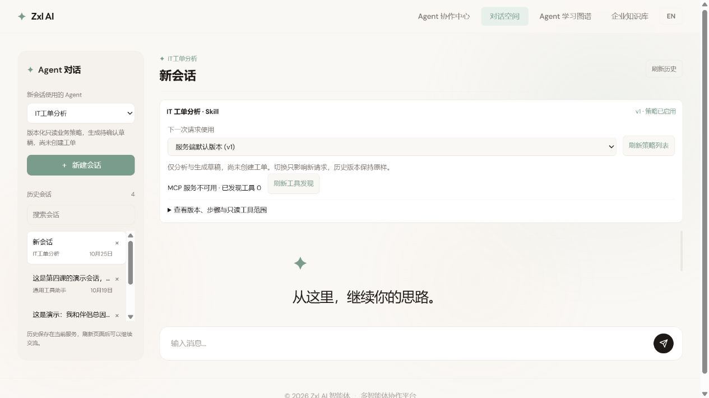
预期：MCP就绪，显示固定只读工具与schema摘要
实际：真实READY，版本v1、四步骤、预算30000ms与只读knowledge工具显示
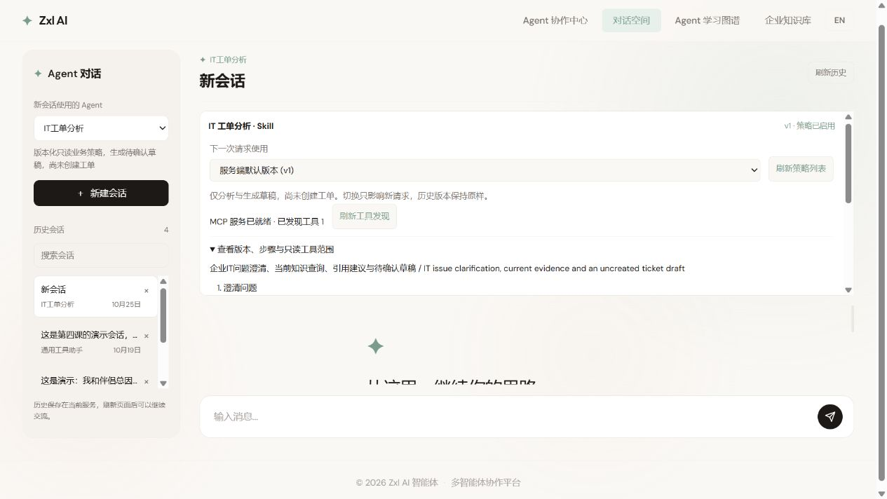
预期：新请求保留v2选择，目录仍显示默认v1
实际：选择未被刷新覆盖；下一请求用v2，尚未发模型请求
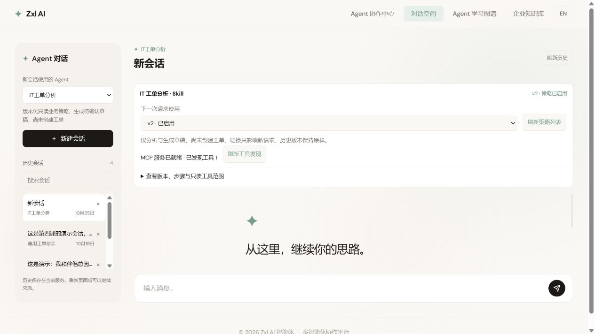
预期：不调用工具或模型；返回澄清并保存v2快照
实际：页面显示需要补充信息，明确尚未查询知识或创建工单
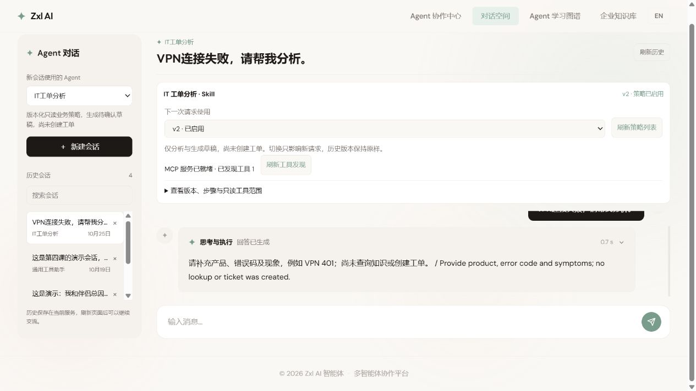
预期：显示真实NEEDS_INPUT步骤和v2定义/工具摘要
实际：事件和v2快照正确，但展开策略面板占据过多高度，执行卡被裁切，阅读空间不足；已记录为布局问题，待自动收起后重跑。
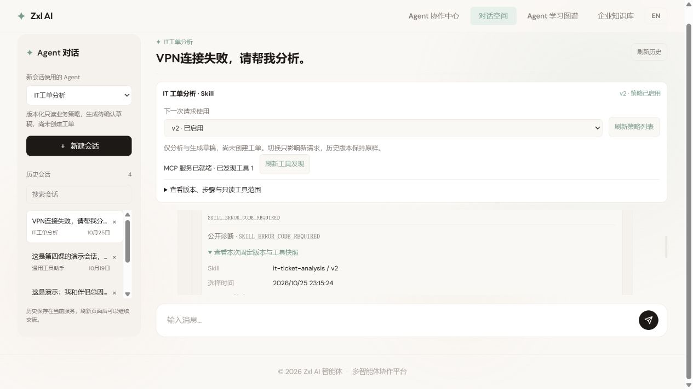
预期：请求启动后策略面板自动收起，为步骤和结果留出空间
实际：策略摘要仍显示v1与真实服务状态，面板已收起，正在执行真实调用
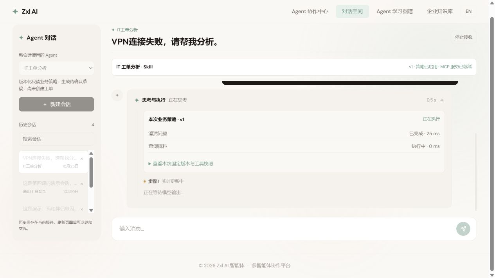
预期：当前证据生成建议与未创建草稿
实际：实际15.5秒执行失败，未发布草稿；保留失败并排查，不能记作成功
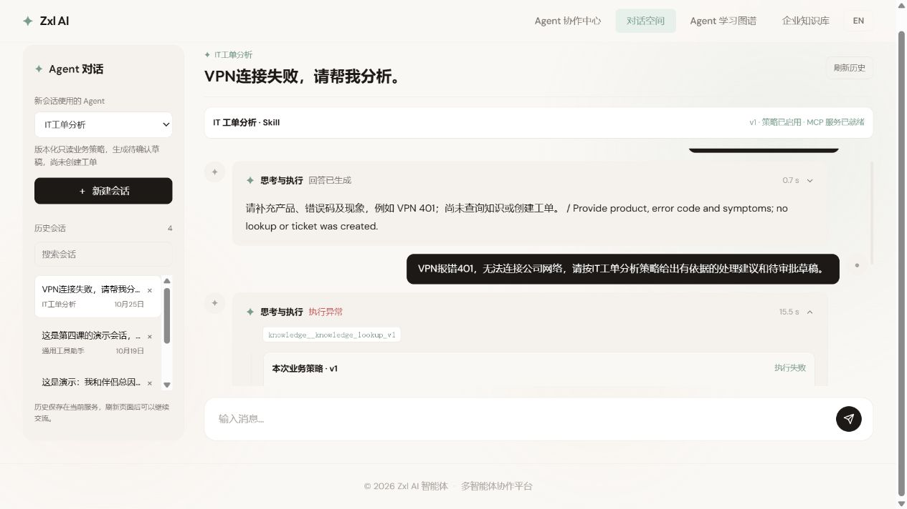
预期：模型选择允许工具后生成有依据草稿
实际：20.1秒失败且无TOOL_REQUESTED；未伪造调用或草稿，安全诊断粒度不足，待补分类后重跑
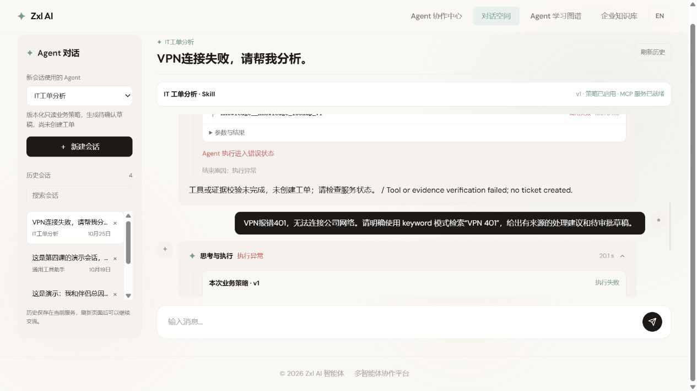
预期：显示真实进行中状态与未完成验收项，不自动标掌握
实际：111节点156关系；第16课明确两次真实失败待修复，工程与个人掌握分开
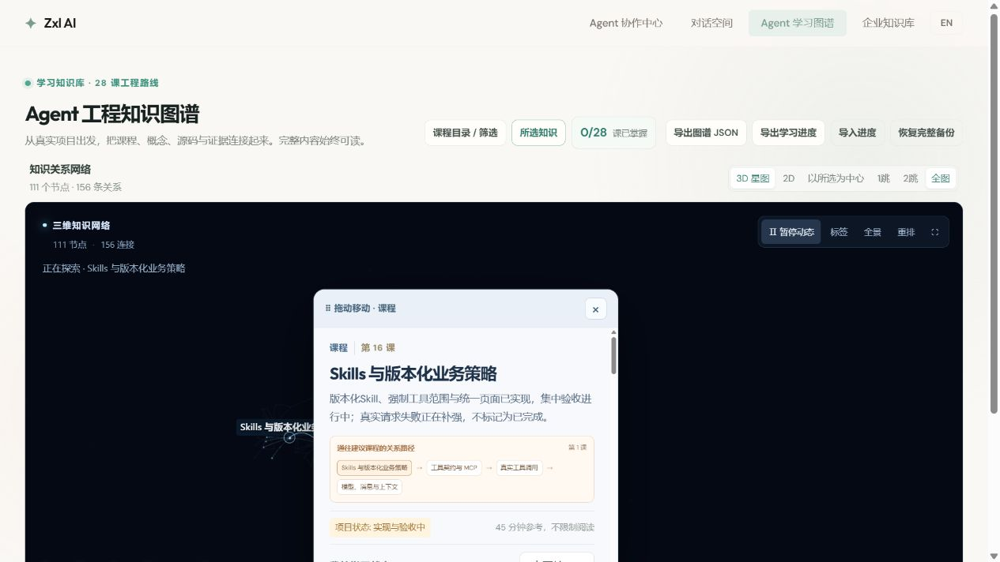
预期：第17课完整任务入口存在，工程标记尚未实施
实际：关联导航进入身份权限课程，任务包已发布，未把规划写成实现
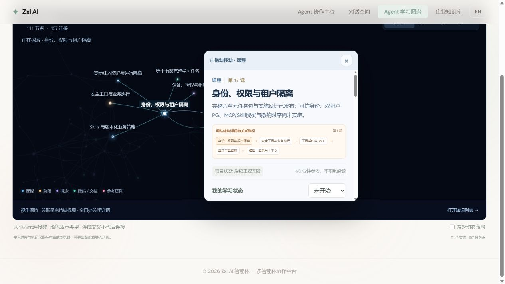
预期：保持第17课选择，显示直接关联
实际：111/157全量背景信息与一跳局部视图分开，下一课阅读内容未串成第16课
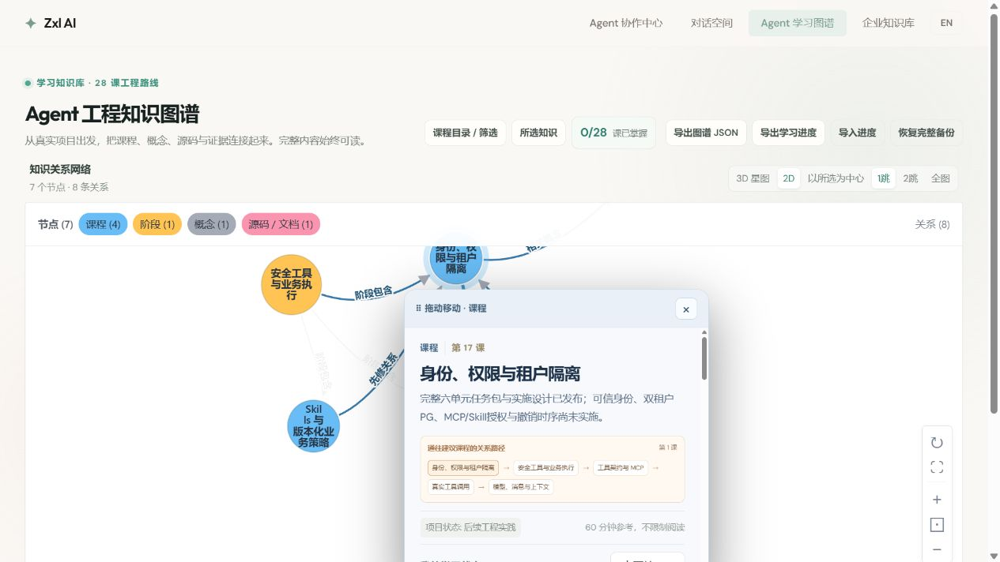
预期：英文内容与中文相同边界，当前选择保持
实际：Trusted identity与任务包说明正确显示，工程仍未实施
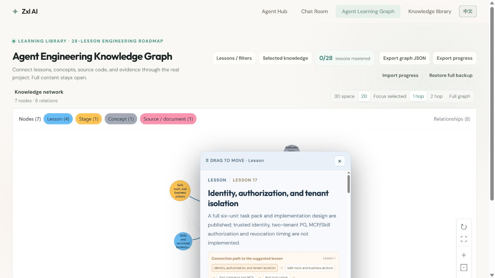
预期：只显示匹配知识及有效关系，工程证据可见
实际：Skill概念、课程和新运行源码证据出现在筛选结果中，没有捏造额外关系
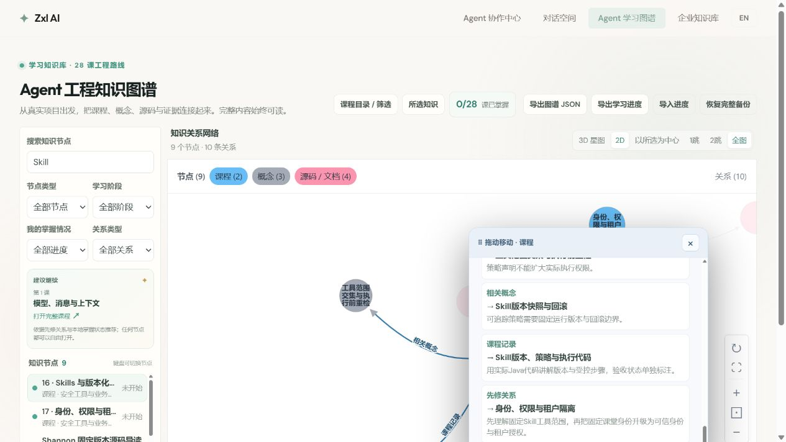
预期：所有个人笔记、掌握与阅读位置完全还原
实际：JSON深度比较完全一致；关闭阅读卡，保留中文全图3D状态
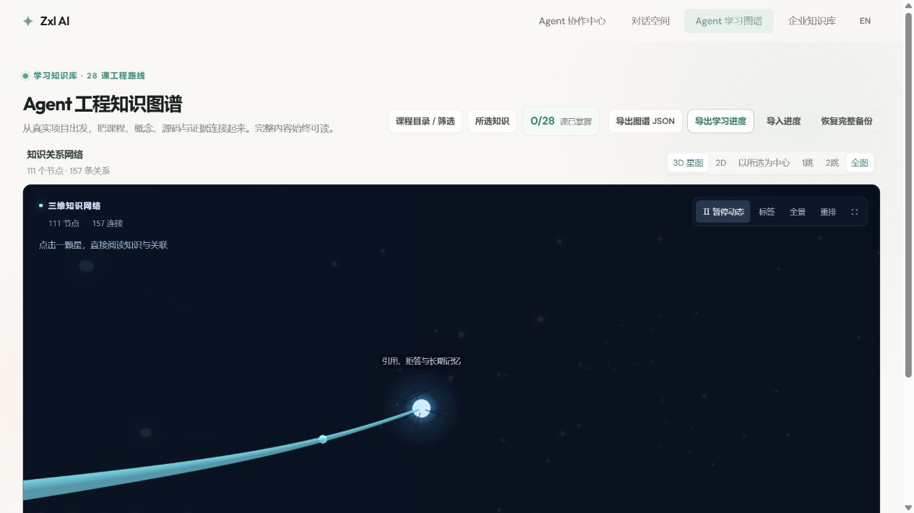